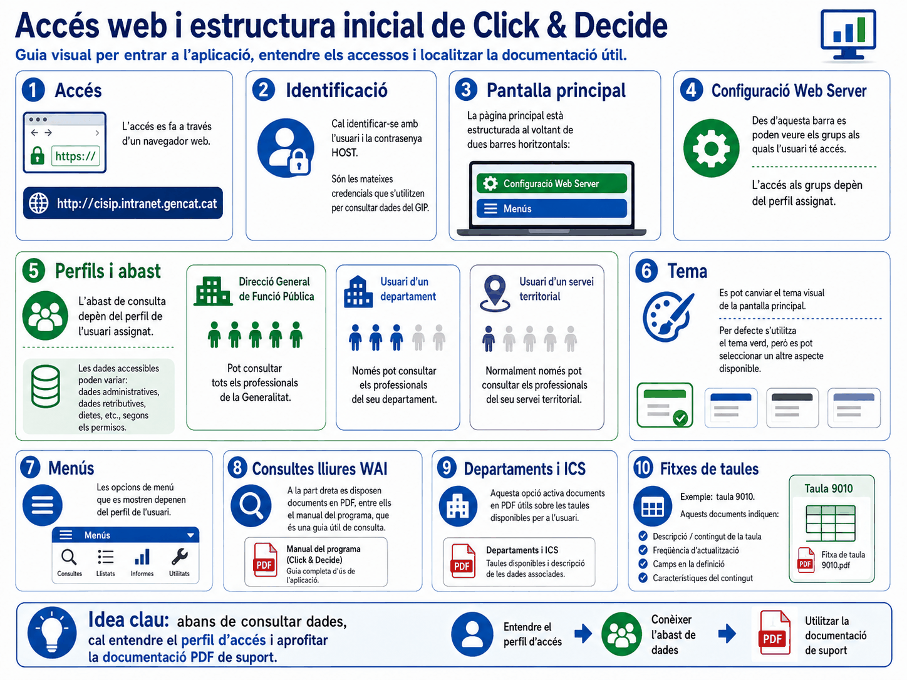
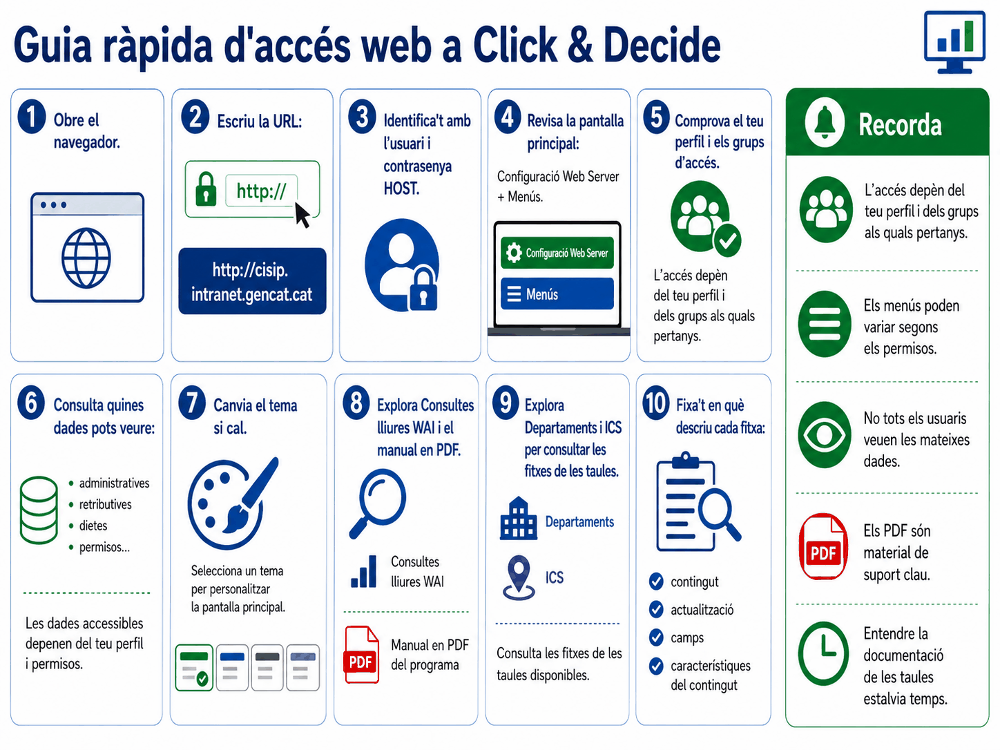
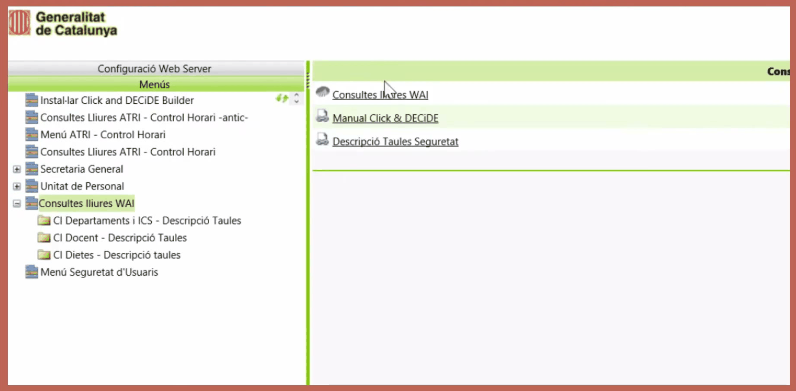

Apartat 1L'adreça i la identificació
L'accés es fa amb el navegador corporatiu. A la barra d'adreces cal escriure:
http://cisip.intranet.gencat.cat
En carregar la pàgina apareix una pantalla d'identificació que demana nom d'usuari i contrasenya. Aquí hi ha el primer punt que genera confusió:
Com a nom d'usuari cal introduir el codi d'usuari de host, és a dir, exactament el mateix que feu servir per connectar-vos al GIP, amb la seva contrasenya corresponent. No és una contrasenya nova ni específica de Click & Decide.
Aquesta identitat compartida és còmoda, però té una conseqüència que convé conèixer abans d'equivocar-se tres vegades seguides.
Apartat 2Problemes de contrasenya
La documentació oficial destaca dos casos, i tots dos són habituals el primer dia:
Entreu bé i no us deixa passar
Si esteu segurs que l'usuari i la contrasenya són correctes i tot i així no accediu, molt probablement teniu la contrasenya de host caducada. La solució no passa per Click & Decide: heu de crear una contrasenya nova des del host, tal com ho feu habitualment.
Us equivoqueu diverses vegades
Si introduïu malament la contrasenya diverses vegades, l'usuari de host queda suspès. En aquest cas cal demanar al servei d'atenció a l'usuari del vostre departament que el torni a activar. Com que és l'usuari del GIP, el bloqueig us afecta també allà.
Val la pena aturar-se després del segon intent fallit i comprovar la contrasenya al GIP abans de continuar provant. Recuperar un usuari suspès depèn de tercers i pot costar-vos el matí.
Un avís que surt en pantalla al vídeo i que estalvia trucades: si el vostre usuari està caducat o suspès al host, tampoc no podreu entrar al Click & Decide. No és un problema del programa, i per tant no se soluciona des d'aquí: primer cal desbloquejar l'usuari de host, el mateix que useu per al GIP.
Apartat 3Esquema general

Apartat 4Estructura de la pantalla
Un cop a dins, la interfície principal s'organitza en dues barres horitzontals:
-
Configuració Web Server
Hi trobareu els grups als quals teniu accés. És la manera més directa de veure, sense endevinar-ho, quins conjunts d'informació us han autoritzat.
En aquesta mateixa secció hi ha també l'opció de canviar el tema de l'aplicació. És purament estètic: per defecte la pantalla principal és de color verd i es pot canviar segons les preferències de cadascú. No afecta ni les dades ni els permisos.
-
Menús
Les opcions que hi apareixen varien segons el perfil. Aquí és on hi ha Consultes lliures WAI, Departaments i ICS i, si el vostre perfil hi arriba, els llistats predefinits.


Val la pena obrir Configuració Web Server encara que no
n'hàgiu de tocar res, perquè és on veieu quin perfil teniu:
hi surt el vostre usuari i la llista de grups als quals
pertanyeu, amb noms com SIP_TAULES_DPT_ADM o
SIP_DPT_EN_TOT, que són els que decideixen quines taules
i quines dades veureu. A la mateixa pantalla hi ha l'adreça IP del
servidor, el Tema (Click and DECiDE, Blue o Surf), l'idioma,
el format de data i números, i l'enllaç per desconnectar.
Apartat 5Què determina el perfil
Aquesta és la idea central de la unitat, i explica moltes diferències entre el que veieu vosaltres i el que veu un company. L'accés a la informació està estrictament limitat pel perfil que us van assignar en demanar l'alta, i el perfil actua sobre dos eixos independents.
Primer eix: fins on arriba (l'abast)
| Perfil | Què pot consultar |
|---|---|
| Direcció General de Funció Pública | Tots els professionals de la Generalitat. |
| Usuari d'un departament | Només les dades del seu departament. |
| Usuari d'un servei territorial | Només les dades d'aquell servei territorial. |
| Usuari d'una unitat orgànica | Només les dades de la seva unitat orgànica. |
Segon eix: què veu (el tipus de dades)
Un perfil pot donar accés només a dades administratives, mentre que un altre hi afegeix dades retributives, de dietes, de substitucions o de control horari. Dues persones del mateix departament poden tenir, per tant, taules diferents disponibles.
El filtre pel vostre àmbit ja s'aplica sol. Un usuari d'un departament concret no ha d'afegir cap criteri per limitar la consulta al seu departament: el sistema ho fa per ell. Ho recordarem a la unitat 7, quan parlem dels camps d'ubicació.
Apartat 6Els manuals de les taules
Aquesta secció és, de llarg, la més útil del portal, i és la que més gent desconeix. Els PDF apareixen a la banda dreta de la pantalla en seleccionar cada opció del menú.
-
Consultes lliures WAI
En fer clic sobre aquesta opció es mostra a la dreta el manual de funcionament del programa en PDF. S'obre amb un sol clic i serveix com a guia d'ús general.
-
Departaments i ICS, i la resta de carpetes
En seleccionar les carpetes que pengen de Consultes lliures WAI s'activen a la dreta els PDF informatius de cada taula. Si teniu accés a les taules administratives, per exemple, hi haurà un document dedicat a la taula 9010.
Cada un d'aquests documents descriu, per a la seva taula:
- la descripció del contingut: què hi ha i què no hi ha;
- la freqüència d'actualització: diària, setmanal...;
- els camps disponibles a la seva definició;
- les característiques del contingut, és a dir, els codis possibles de cada camp i què volen dir.
Molts camps de la WAI contenen només codis, sense una
columna paral·lela amb la descripció. Sense el PDF corresponent no hi ha
manera de saber què significa una Z o una X.
A les unitats 8 i 9 en veurem l'exemple més clar. Consulteu-los sempre
abans d'escriure el criteri, no després de veure un resultat estrany.
Al costat dels manuals de taules hi ha dos enllaços més que convé conèixer: el Manual Click & DECIDE, que és la documentació del programa, i Descripció Taules Seguretat, que descriu les taules de permisos, és a dir, què pot veure cada perfil.
Val la pena obrir el manual de taules administratives encara que
sigui un cop: el seu índex és el catàleg de taules, i cada
entrada diu amb quina periodicitat es carrega. Persones
(WAIV9010_PERSONA) i llocs (WAIV9080_LLOC)
es carreguen cada dia; l'històric persona-lloc
(WAIV9030_PUNTERH) i les titulacions
(WAIV9040_TITULACIO), cada setmana; i els
expedients (WAIV9070_EXPEDIENT), a petició. Si un
canvi que heu fet al GIP no us surt a la consulta, aquesta és la
primera cosa a mirar.
Apartat 7Llistats predefinits
El portal ofereix també una col·lecció de llistats ja construïts. Es troben desplegant els menús Secretaria General i Unitat de Personal i navegant-hi.
Val la pena mirar-los abans de posar-se a construir res: si algun respon a la vostra necessitat, us estalvieu tota la feina de fer la consulta.
Apartat 8Desconnexió ordenada
Per sortir del sistema completament, el manual recomana un ordre concret:
Tancar directament el navegador deixa la sessió oberta al servidor, i pot donar problemes en la següent connexió.
Apartat 9Llista de comprovació
- Accedir al portal amb les credencials de host.
- Saber què fer si la contrasenya ha caducat o l'usuari està suspès.
- Distingir les seccions Configuració Web Server i Menús.
- Explicar els dos eixos que defineix el perfil: abast i tipus de dades.
- Localitzar el manual d'ús del programa.
- Localitzar el PDF d'una taula concreta i trobar-hi els codis d'un camp.
- Comprovar si ja existeix un llistat predefinit que resolgui la necessitat.
- Desconnectar-se en l'ordre correcte.
Tornem a Builder per veure què hi ha dins d'un projecte: consultes, informes i cubs, i la regla de dependència que els relaciona.